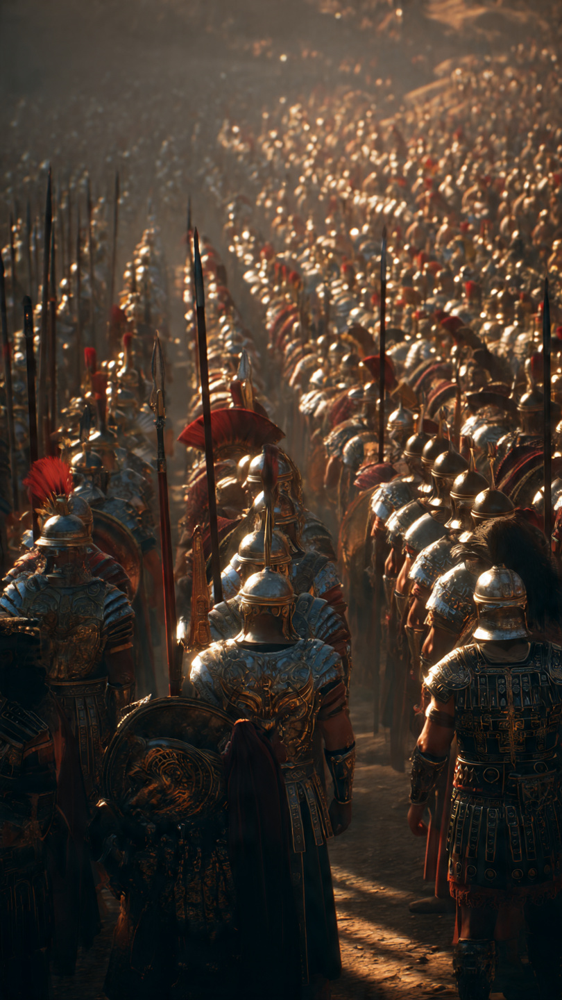

في زمن قديم من بني إسرائيل، عاش قوم مرّوا بفترة صعبة من الضعف والخوف.
كانوا قد فقدوا جزءًا كبيرًا من قوتهم، وأصبحوا يتمنون قائدًا يجمع صفوفهم ويعيد لهم الأمل.
ذهبوا إلى نبيهم وطلبوا منه أن يجعل لهم ملكًا يقودهم في مواجهة أعدائهم.
قالوا:
"ابْعَثْ لَنَا مَلِكًا نُقَاتِلْ فِي سَبِيلِ اللَّهِ"
فأخبرهم نبيهم أن الله اختار لهم رجلًا اسمه طالوت ليكون ملكًا عليهم.
لكن بعضهم اعترض.
قالوا:
"كيف يكون له الملك علينا ونحن أحق بالملك منه؟"
فذكّرهم نبيهم أن اختيار القائد لا يكون بالمال أو المكانة فقط، بل بما يمنحه الله من علم وقوة.
كان طالوت رجلًا يمتلك صفات تؤهله للقيادة.
كان قويًا، حكيمًا، وقادرًا على تحمل المسؤولية.
بدأ طالوت بتجهيز الجيش، وانطلق مع جنوده في رحلة صعبة.
كان يعرف أن النصر لا يكون بكثرة العدد فقط، بل بالإيمان والصبر والطاعة.
وفي الطريق، مرّ الجيش باختبار مهم.
كان عليهم أن يثبتوا قدرتهم على الالتزام بالأوامر، لأن المعارك لا تنجح مع من يتبع رغباته فقط.
وصل الجيش أخيرًا أمام جيش العدو بقيادة جالوت.
وكان جالوت محاربًا ضخمًا مشهورًا بالقوة والشجاعة.
خاف كثير من الناس عندما رأوه.
فقد كان الجميع يظنون أن لا أحد يستطيع الوقوف أمامه.
لكن بين الجنود كان هناك شاب صغير لم يكن يملك درعًا قويًا ولا جيشًا كبيرًا...
كان اسمه داود.
ولم يكن أحد يعلم أن هذا الشاب سيصبح صاحب موقف سيغير التاريخ.
📷 الصورة رقم 1

وقف الجيشان أمام بعضهما، وكان الخوف واضحًا على كثير من الجنود.
فقد كان جيش جالوت قويًا، وكان جالوت نفسه محاربًا مشهورًا لم يجرؤ كثيرون على مواجهته.
نظر الناس إلى حجم جالوت وسلاحه، وظنوا أن الفوز مستحيل.
لكن داود لم ينظر إلى القوة الظاهرة فقط...
بل كان قلبه متعلقًا بالله.
كان داود شابًا بسيطًا، لكنه كان يمتلك شجاعة وإيمانًا كبيرين.
لم تكن ثقته في قوته الشخصية، بل في أن الله ينصر من يشاء.
تقدم داود لمواجهة جالوت.
تعجب الناس وقالوا:
"كيف يستطيع هذا الشاب مواجهة هذا المحارب العظيم؟"
لكن داود كان يعلم أن الإنسان لا ينتصر دائمًا بما يملك من أدوات، بل بما يحمله من يقين وصبر.
واجه داود جالوت، وضربه بإذن الله، فهزمه.
وانتشر الخبر بين الناس:
لقد انتصر الشاب الذي ظنه الجميع ضعيفًا على أقوى محارب.
لم يكن الانتصار بسبب القوة الجسدية فقط...
بل بسبب الإيمان والثبات والشجاعة.
بعد ذلك، رفع الله مكانة داود، وأصبح له شأن عظيم بين قومه.
وقد آتاه الله الحكمة والعلم والملك.
وأصبحت قصة داود وجالوت مثالًا خالدًا على أن المقاييس التي يراها الناس ليست دائمًا هي الحقيقة.
فقد يرى الناس شخصًا صغيرًا وضعيفًا...
لكن الله يعلم ما في قلبه من قوة وإيمان.
📷 الصورة رقم 2
بعد انتصار داود عليه السلام على جالوت، تغيرت نظرة الناس إلى معنى القوة الحقيقية.
فقد أدركوا أن القوة ليست دائمًا في كثرة الجنود أو ضخامة السلاح...
بل في الإيمان والصبر والثقة بالله.
أصبح داود عليه السلام صاحب مكانة عظيمة بين قومه، وقد منّ الله عليه بالحكمة والعلم.
قال تعالى:
"وَآتَاهُ اللَّهُ الْمُلْكَ وَالْحِكْمَةَ وَعَلَّمَهُ مِمَّا يَشَاءُ"
أما قصة طالوت وجالوت فبقيت تذكر الناس بأن النصر لا يرتبط دائمًا بالأعداد الكبيرة.
فقد يكون القليل بإيمانهم أقوى من الكثير إذا كان الكثير بلا ثبات.
وتعلمنا القصة أن الإنسان لا يجب أن يحكم على الآخرين من شكلهم أو أعمارهم أو ما يملكونه.
فداود كان شابًا صغيرًا في أعين الناس...
لكنه كان كبيرًا بإيمانه وشجاعته.
كما تعلمنا أن القيادة مسؤولية، وأن القائد الحقيقي هو من يجمع بين الحكمة والقوة والعدل.
لقد أراد الله من هذه القصة أن يعلمنا أن المستحيل قد يصبح ممكنًا عندما يجتمع الإيمان مع العمل والصبر.
فكم من شخص ظنه الناس ضعيفًا، لكنه عند الله صاحب مكانة عظيمة.
وكم من موقف بدا صعبًا، لكنه انتهى بالنصر لمن وثق بالله.
⚔️📖 انتهت القصة 📖⚔️
العبرة:
لا تقاس القوة بالحجم أو العدد، فالإيمان والصبر والثقة بالله تصنع أعظم الانتصارات.